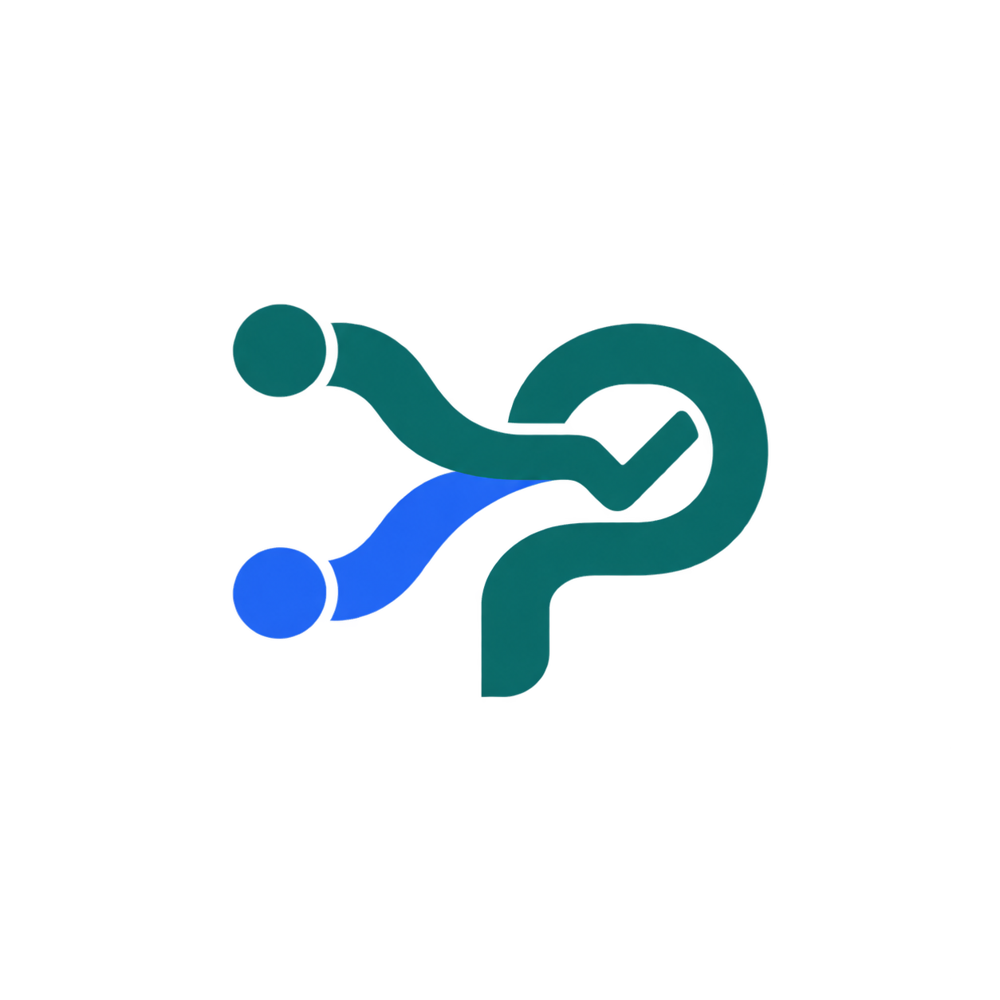
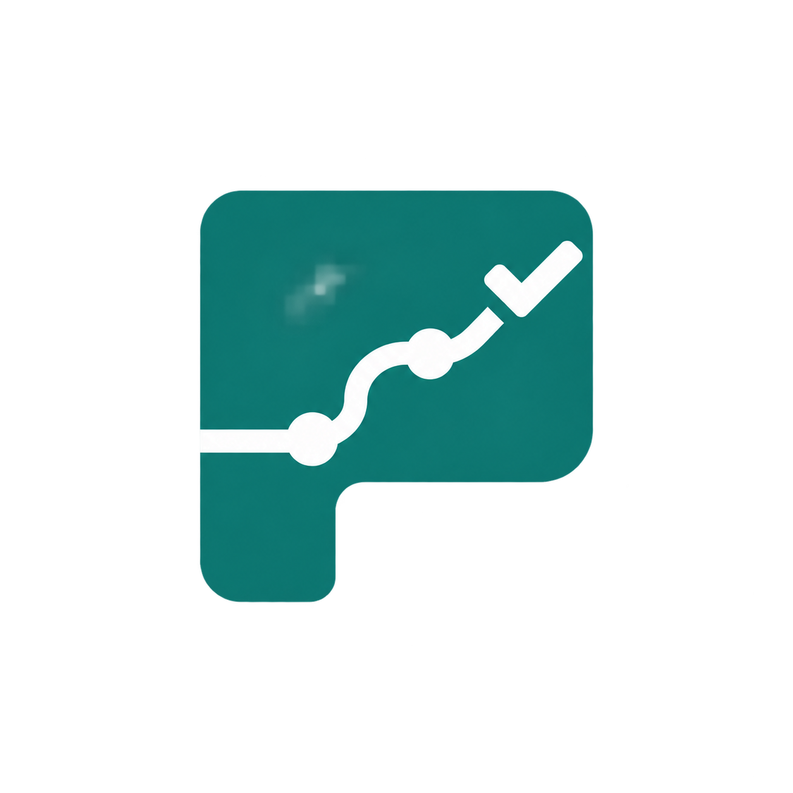

Cinco rutas conceptuales para comunicar búsqueda, comparación, recorrido y decisión. Son pruebas raster; la elegida se reconstruirá como SVG y se probará como favicon.

01 · Rutas convergentes
Dos opciones llegan a una vía común y terminan en una decisión.
02 · Búsqueda diagnóstica
La búsqueda contiene un recorrido y el mango resuelve la elección.

03 · Orden, ruta y resultado
Una orden simplificada muestra el avance desde estudios hasta confirmación.
04 · Opciones a destino
Representa proveedores o precios que convergen en una opción elegida.
05 · Apertura y camino
Un recorrido atraviesa la búsqueda y sale orientado hacia una decisión.
Ninguna de estas imágenes sustituye todavía el logo activo. La seleccionada deberá simplificarse y probarse a 16, 32 y 192 px.